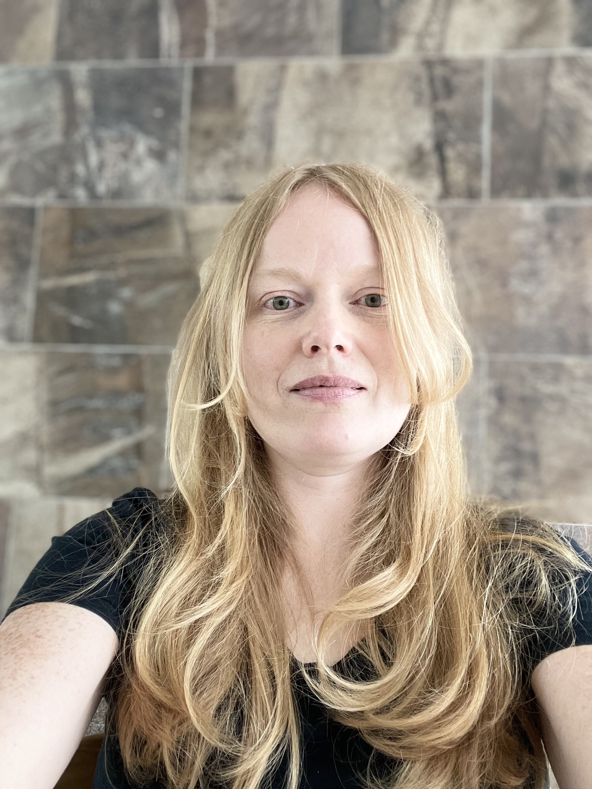

Hey there :)
I'm currently a Senior UX Writer embedded in Apple Marcom via Critical Mass, where I'm focused on creating clear, simple, and accessible flows to help customers finance their Apple device purchases on the Apple Store.
I was previously a Senior Content Designer for Expedia and Blackboard Learn, where I balanced user and business needs to create meaningful conversations between people and products.
I discovered content design in 2017 while completing a UX course from Google. At the time, I was a Content Strategist writing strategic copy for websites and blogs. What began as a way for me to better understand and collaborate with my design coworkers turned into a career pivot as I discovered a way to merge my new passion for accessible user experiences with my longtime love of language.
I started to cultivate my love of words and thinking in systems while completing a Bachelor's degree in Art History at Concordia University in Montreal, Canada. I previously reserved my love of language for art writing and storytelling, but it's been an important content design tool to align stakeholders, understand the people who use our products, and gain support for important projects.
Outside of work, I'm a mom, a traveler, and a life experiencer.